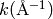

| Larch: X-ray Data Analysis |
Plotting and Visualizing data are vital to any scientific analysis package, and Larch provides several methods for data visualization. These are largely built on two types of data display. The first is the line plot (sometimes calld an xy plot), which shows traces of a set of functions y(x). The second type of data display supported is the 2-dimensional image display, in which a grey scale or false color map shows an image representing a 2-dimensional array of intensity.
Though not as fancy as many dedicated plotting and graphics packages, Larch attempts to provide satisfying and graphical displays of data, and the basic plots made with Larch can be high enough quality to include in publications. In addition, both line plots and image display provide interactive features such as zooming in and out, changing properties such as colors and labels. Finally, copying and saving images of the graphics is easy and can be done either with keyboard commands such as Ctrl-C or from dropdown menus on the graphic elements.
Larch provides a few functions for making line plots, with the principle function being called plot(). The plot() function takes two arrays: x, the abscissa array, and y, the ordinate array. It also accepts a very large number of optional arguments for setting properties like color, line style, labels, and so on. Most of these properties can also be set after the plot is displayed through the graphical display of the plot itself. The plots are fully interactive so that coordinates can be seen (and written to larch variables) by clicking on the plot, and zooming in on portions of the plot can be done with click-and-drag. Right-clicking will pop up a list of options for zooming out, configuring the plot, or saving a PNG image of the plot. Menus on the window frame give even more options, including Copy-to-clipboard and printing.
Multiple plot windows can be shown simultaneously, each in an independent window, and you can control which one is drawn to with a plot window index win.
| Parameters: |
|
|---|
Plot y(x) given 1-dimensional x and y arrays – these must be of the same size. Each x, y pair displayed is called a trace.
There are many options for a plot, all specified by the keyword/value parameters described in the Table of Plot Arguments below.
This is essentially the same a plot(), but with the option new=True. The rest of the arguments are as listed in Table of Plot Arguments.
Table of Plot Arguments These arguments apply for the plot(), newplot(), and scatterplot() methods. Except where noted, the arguments are available for plot() and newplot(). In addition, the scatterplot() method uses many of the same arguments for the same meaning, as indicated by the right-most column.
argument type default meaning scatterplot? title string None Plot title yes ylabel string None abscissa label yes y2label string None right-hand abscissa label yes label string None trace label (defaults to ‘trace N’) yes win integer 1 index of plot window to use (1, 2, ..., 16) yes side left/right left side for y-axis and label yes grid None/bool None to show grid lines yes color string blue color to use for trace yes use_dates bool False to show dates in xlabel (plot() only) no linewidth int 2 linewidth for trace no style string solid line-style for trace (solid, dashed, ...) no drawstyle string line style connecting points of trace no marker string None symbol to show for each point (+, o, ....) no markersize int 8 size of marker shown for each point no dy array None uncertainties for y values; error bars no ylog_scale bool False draw y axis with log(base 10) scale no xmin float None minimum displayed x value yes xmax float None maximum displayed x value yes ymin float None minimum displayed y value yes ymax float None maximum displayed y value yes autoscale bool True whether to automatically set plot limits no draw_legend None/bool None whether to display legend (None: leave as is) no refresh bool True whether to refresh display no arguments that apply only for scatterplot() size int 10 size of marker yes edgecolor string black edge color of marker yes selectcolor string red color for selected points yes For each plot window, the configuration for the plot (title, labels, grid displays, etc) and the properties of each trace (color, linewidth, ...) are preserved for the duration of that window. A few specific notes:
1. The title, label, and grid arguments to plot() default to None, which means to use the previously used value.
2. The use_dates option is not very rich, and simply turns x-values that are Unix timestamps into x labels showing the dates.
3. While the default is to auto-scale the plot from the data ranges, specifying any of the limits will override the corresponding limit(s).
4. The color argument can be any color name (“blue”, “red”, “black”, etc), standard X11 color names (“cadetblue3”, “darkgreen”, etc), or an RGB hex color string of the form “#RRGGBB”.
5. Valid style arguments are ‘solid’, ‘dashed’, ‘dotted’, or ‘dash-dot’ , with ‘solid’ as the default.
6. Valid marker arguments are ‘+’, ‘o’, ‘x’, ‘^’, ‘v’, ‘>’, ‘<’, ‘|’, ‘_’, ‘square’, ‘diamond’, ‘thin diamond’, ‘hexagon’, ‘pentagon’, ‘tripod 1’, or ‘tripod 2’.
7. Valid drawstyles are None (which connects points with a straight line), ‘steps-pre’, ‘steps-mid’, or ‘steps-post’, which give a step between the points, either just after a point (‘steps-pre’), midway between them (‘steps-mid’) or just before each point (‘steps-post’). Note that if displaying discrete values as a function of time, left-to-right, and want to show a transition to a new value as a sudden step, you want ‘steps-post’.
Again, most of these values can be configured interactively from the Plot configuration window.
A scatterplot differs from a line plot in that the set of x, y values are not assumed to be in any particular order, and so are not connected with a line. Arguments are very similar to those for plot(), and are listed in Table of Plot Arguments.
updates an existing trace of a plot.
| Parameters: |
|
|---|
This function is particularly useful for data to be plotted is changing and you wish to update traces from a previous plot() with new data without completely redrawing the entire plot. Using this method is substantially faster than replotting, and should be used for dynamic plots, such as plottting the progress of some function during a fit. Note that you cannot change properties such as color here – these will be inherited from the existing trace. In that sense, most of the properties of the trace and of the plot as a whole remain unchanged, it just happens that the data for the trace has been replaced.
add text at x, y coordinates of the plot window
| Parameters: |
|
|---|
draw arrow from x1, y1 to x2, y2.
| Parameters: |
|
|---|
save the current plot to a PNG or other output formats.
| Parameters: |
|
|---|
save the current 2D image from imshow() to a PNG or other output formats.
| Parameters: |
|
|---|
return the underlying Display object. For advanced usage, this contains the PlotDisplay object, which is the wxPython frame. The matplotlib Axes object will be the panel.axes.
Here a a few example plots, to whet your appetite:
x = linspace(0, 10, 101)
y1 = sin(x)
y2 = -2 +0.2*x + (0.2*x)**2
newplot(x, y1)
will make this plot:
Adding a second curve, and setting some labels:
plot(x, y2, xlabel='x (mm)', ylabel='f(x)', title='Example Plot')
will make this plot:
From the main plot window, you can perform several tasks interactively:
Getting Cursor Position:
From the plot window you can click the left button of your mouse, and see the X, Y coordinates of where you clicked displayed in the status bar at the bottom of the plot window. You can also read the values from the variables _plotter.plot1_x and _plotter.plot1_y, for plot window 1, and _plotter.plot2_x and on for other plot windows.
Zooming in and out:
Left-clicking on the plot window and then dragging the mouse around with the button still pressed will draw a rectangular box around part of the plot window. Releasing the mouse will zoom in on the portion of the plot set by the rectangle. You can zoom in multiple times.
To unzoom, press Ctrl-Z (Apple-Z on Mac OS X), which will go back to the previous zoom rectangle. You can also right-click on the plot, which will bring up a window from which you can zoom out 1 level at a time, or all the way back to fully zoomed out.
Copy to Clipboard:
To copy the plot image (just the main plot image, not all the Window decorations such as menus and status bar) to the sysem clipboard, type Ctrl-C (Apple-C for Mac OS X users). You can then paste this into other applications such as rich text documents and slide presentation tools.
Save image to PNG:
To save a copy of the plot image, use Ctrl-S (Apple-S for Mac OS X users). This will bring up a ‘save file’ dialog box for writing a PNG file of the plot.
Print image:
On many systems, you should be able to print directly from the Plot Window, using Ctrl-P (Apple-P for Mac OS X users). This may not work on all systems.
Configuring the Plot:
From the Plot Window, either Ctrl-K (Apple-K for Mac OS X users) or Options->’Configure Plot’ (or right-click to bring up a popup menu, then select Configure) will bring up the plot configuration window, which looks like this:
From here you can set the titles, labels, and styles, colors, symbols, and so on for the line traces.
The titles and labels for plot elements can be simple strings or use a subset of TeX markup to give fine control over typesetting greek letters, mathematical symbols and formulae. A simple example would be:
plot(k, chi, xlabel = '$ k \rm(\AA^{-1}) $', ylabel = '$ \chi(k) $ ')
The portion of the strings between the dollar signs (‘$’) will be rendered as TeX-like markup, and so render the x and y labels as (for the pedantic, these renderings below may be only approximate):

An important point here is the use of the backslash character, ‘\’, which you may recall from the tutorial is also used as an escape sequence. Thus some TeX sequences, such as ‘\theta’ may require an additional backslash, so that the ‘\t’ part isn’t rendered as a tab character. More generally, use of raw strings is recommended in this context, so that one uses:
plot(k, chi, xlabel = r'$ k \rm(\AA^{-1}) $', ylabel = r'$ \chi(k) $ ')
Note that this does not actually use TeX (so you don’t need TeX installed), and the rendering is done by the matplotlib library. For further details about using TeX for markup, including a list of symbols, commands to change fonts, and examples, can be found at http://matplotlib.org/users/mathtext.html
When using the Plot Configuration window to enter a TeX-like string, the text control box will be given a yellow background color (instead of the normal white color) if there is an error in rendering your TeX string.
| Parameters: |
|
|---|
display a grey-scale or false-color image from a 2-d array of intensities.
| Parameters: |
|
|---|
display a grey-scale or false-color contour map from a 2-d array of intensities.
For both these functions, the x and y arguments are intended to show real world coordinates for the image, not just the array indices. If None, the array indices will be shown.
By default, the image will be shown with the origin (pixel [0, 0]) in the lower left corner. The image can be rotated and flipped by the user.
The colormap argument is the name of the color map to use to transform intensity to color. The default table is ‘gray’ for a grayscale mapping. Other valid names include ‘coolwarm’, ‘cool’, ‘hot’, ‘jet’, ‘Reds’, ‘Greens’, ‘Blues’, ‘copper’, and a host of others, available
From the Image Display Window, you zoom in on regions of the image, rotate the image, change the color table, change the intensity scaling, change the interpolattion algorithm used. You can also toggle between showing an image of continuously varying intensities and a contour map. An example image, generated with:
def gauss2d(x, y, x0, y0, sx, sy):
return outer(exp(-(((y-y0)/float(sy))**2)/2),
exp(-(((x-x0)/float(sx))**2)/2))
enddef
ny, nx = 350, 400
ix = arange(nx)
iy = arange(ny)
x = ix / 10.
y = -2 + iy / 10.0
dat = 0.2 + (0.05*random.random(size=nx*ny).reshape(ny, nx) +
2.0*gauss2d(ix, iy, 190, 176, 57, 69))
imshow(dat, x=x, y=y, colormap='coolwarm')
is shown below:
and as a contour plot, with a different color table:


{kind=link}
{kind=link}
{kind=link}